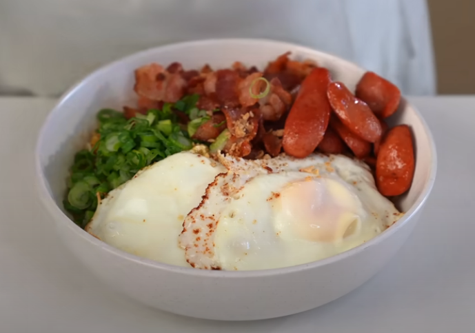

Upgraded Indomie

Description
Levled up recipe for the popular instant noodle brand - Indomie
Ingredients
- Indomie Noodles, includes seasonings(black, orange, fat), powder, crispy shallots
- Scallions
- Bacon
- Water
- Egg
- Sausage Ramen (slicked beef franks)
Steps
- Slice up scallions and bacon
- Start cooking the noodles from the Indomie package
- Cook the bacon with a little water to prevent splatters. Cook until 80% of fat is out and set aside the bacon
- With the left over oil from the bacon, cook the egg/s, sunny-side up
- Place all the packaged seasonings on a bowl except for the fat and shallots
- Pour the bacon oil used to cook the eggs onto the bowl and stir
- Toss in the cooked noodles and mix well
- Top with scallions, bacon, eggs, sausage ramen, and crispy shallots(from the Indomie package).
Home